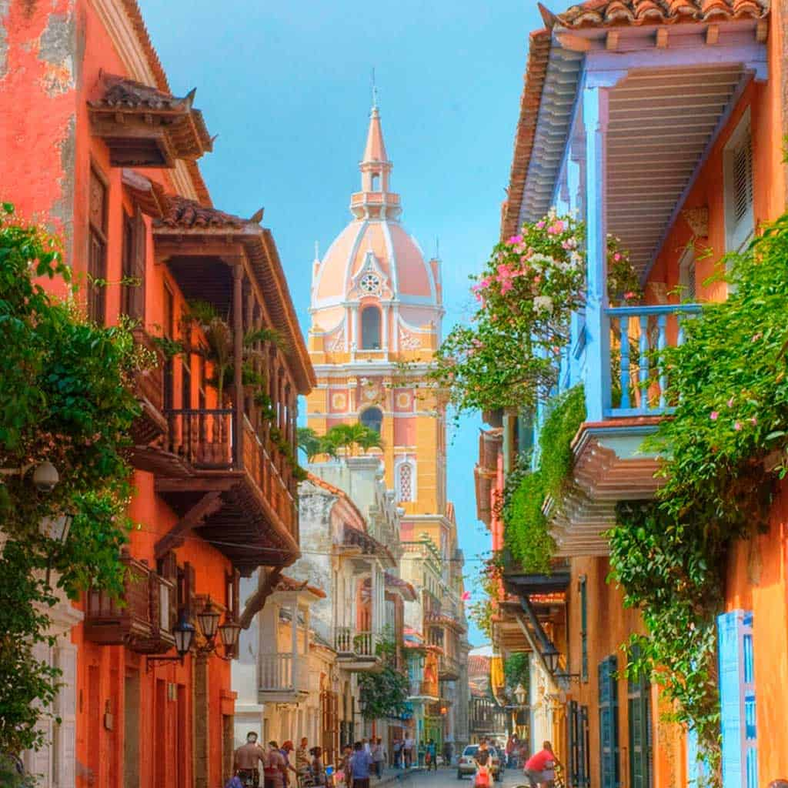

Cartagena das Índias: Joia do Caribe e Guardiã da História
Banhada pelo mar azul-turquesa do Caribe, Cartagena das Índias (ou simplesmente Cartagena) é muito mais do que um destino paradisíaco: é um dos maiores livros de história a céu aberto da América Latina. Fundada em 1 de junho de 1533 pelo conquistador espanhol Pedro de Heredia, a cidade nasceu sobre as cinzas de uma antiga aldeia indígena pertencente ao povo Calamarí, da família Caribe.
A Origem do Nome e a Riqueza Estratégica
O nome "Cartagena" foi uma homenagem à cidade portuária de Cartagena, na Espanha, enquanto o sufixo "das Índias" foi acrescentado para distingui-la da sua homônima europeia e demarcar sua localização no "Novo Mundo". Graças à sua baía profunda e protegida, o porto tornou-se rapidamente o ponto nevrálgico da coroa espanhola na região.
Durante os séculos XVI e XVII, Cartagena viveu um período de esplendor — e de extrema cobiça. Era dali que partiam os galeões repletos de ouro, prata e esmeraldas extraídas da América do Sul com destino à Espanha.
O Escudo de Pedras e a Lenda dos Piratas
Essa imensa riqueza fez da cidade o alvo predileto de corsários e piratas ingleses, franceses e holandeses, como o corsário Francis Drake, que a saqueou em 1586. Para se defender, a Coroa Espanhola transformou Cartagena em uma das praças-fortes mais fortificadas do mundo.